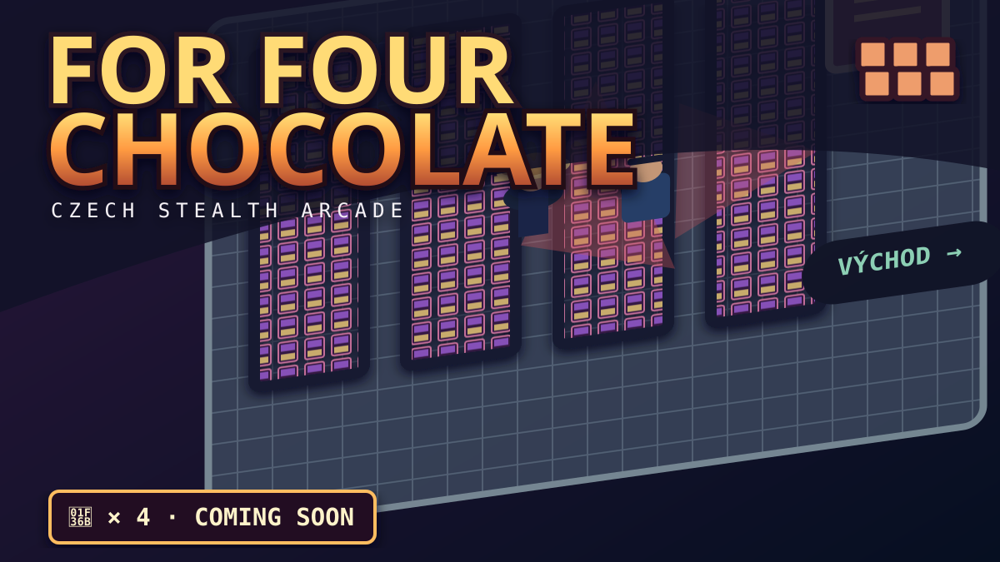

IL PROSSIMO GIOCO · STEALTH ARCADE
For Four Chocolate
Domenico «Ipno» entra in un supermercato della Repubblica Ceca con una missione: raccogliere cioccolato e uscire senza farsi scoprire.
Poliziotti in pattuglia, telecamere e corsie che diventano un labirinto. Una commedia stealth dall'alto, con record da battere e un finale da ricordare.
Il gioco è in preparazione. Questa pagina è soltanto la sua presentazione: non ci sono ancora livelli o controlli giocabili.